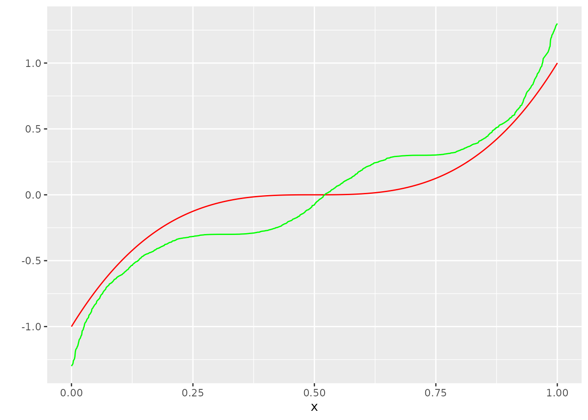
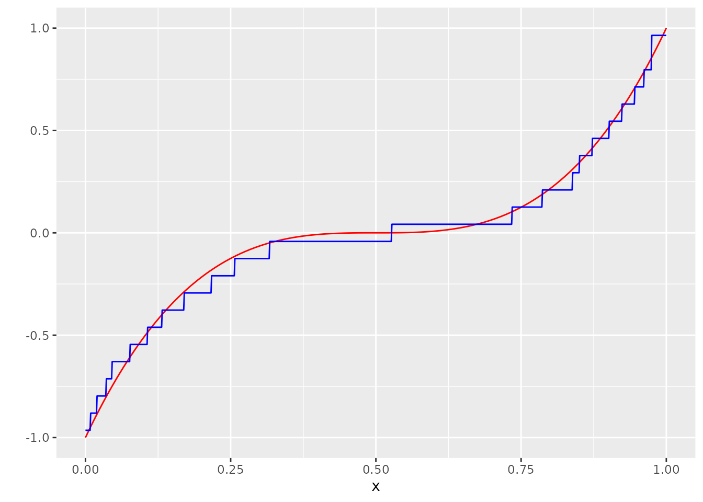
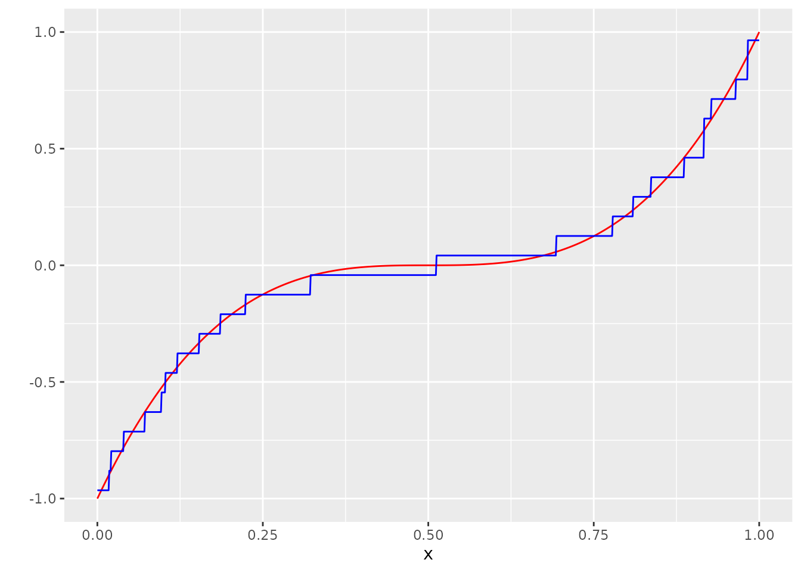
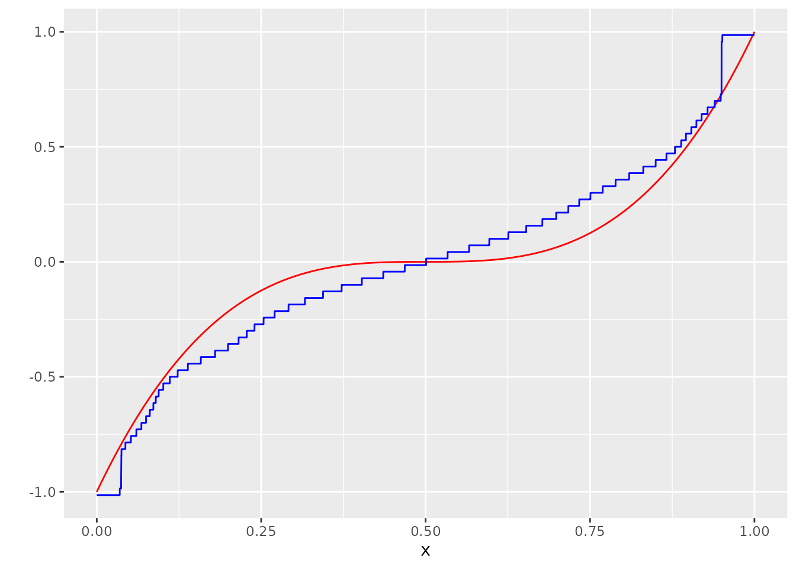

UncoupledIsoReg usage guide
Jan Meis
2021-12-13
UncoupledIsoReg_usage_guide.RmdThe setting
You have uncoupled data of the form \(x =\{x_1,...,x_n \}\), \(Y=\{Y_1,...,Y_n \}\). The \(x_i\) are fixed and known design points, for the sake of the example lets say equidistant on \([0, 1]\). The \(Y_i\) are modeled by the equation \[ Y_i = m(x_i) + \varepsilon_i, \] where \(m:[0, 1] \rightarrow [-V, V]\) is an unknown, non-decreasing function and \(\varepsilon_i \stackrel{iid}{\sim} \mathcal{D}\) are distributed according to some known error distribution, let’s say \(\mathcal{D} = \text{Ber}\). Uncoupled data means that you do not know which \(x_i\) belongs to which \(Y_i\).
Representing the problem numerically
Let us put our assumptions into code. Let’s say \(n=100\) and \(m(x)=(2(x- 0.5))^3\) lets call Y_no_error = (m(x_1),...,m(x_n)).
library(UncoupledIsoReg)
n <- 1000
x <- seq(0, 1, length.out = n)
m <- function(x) (2*(x- 0.5))^3
Y_no_error <- m(x)
varepsilon <- rbernoulli_custom(n, a=0.3, b= -0.3, p=0.5)
Y <- (Y_no_error + varepsilon) %>% sample(n)
dat <- tibble(x=x, Y=Y, Y_no_error = Y_no_error)Let’s visualize our assumptions. This is \(m\):
ggplot(dat, aes(x=x, y=Y_no_error)) +
geom_line(col="red") +
scale_y_continuous("")
If we took the random ordering of \(Y\) at face value, this would be what we would get:
ggplot(dat, aes(x=x, y=Y_no_error)) +
geom_line(col="red") +
scale_y_continuous("") +
geom_point(aes(x=x, y=Y))
This is not really helpful though. It is a much better idea to imagine our information on \(X\) as if it was projected on the x-axis, and the information on \(Y\) as if it was projected on the y-axis:
ggplot(dat, aes(x=x, y=Y_no_error)) +
geom_line(col="red") +
scale_y_continuous("") +
geom_point(aes(x=x, y=-1), size=0.8, alpha=0.05) +
geom_point(aes(x=0, y=Y), size=0.8, alpha=0.05)
A naive - though as we will see not very useful - approach to get an “estimate” for \(m\) would be to sort \(Y\) in an increasing manner. This would at least lead to a montone function:
Y_sorted <- sort(Y)
dat <- bind_cols(dat, Y_sorted=Y_sorted)
ggplot(dat, aes(x=x, y=Y_no_error)) +
geom_line(col="red") +
scale_y_continuous("") +
geom_line(aes(y=Y_sorted), col="green")
This is terrible. But how can we do better? This is where Rigollet & Weed’s approach (Rigollet and Weed 2018) comes in: We want calculate \[ \hat{m} \in \operatorname{argmin}_{g \in F_V} \operatorname{W}_1(\pi_g \ast \mathcal{D}, \hat{\pi}). \] For mathematical details, check out their paper (https://academic.oup.com/imaiai/article/8/4/691/5425686) and our vignette:
vignette("numerical_considerations", package="UncoupledIsoReg")Using this package to calculate the estimator
There are two essential steps to calculating the minimum Wasserstein estimator with our package.
Step 1: Calculate the “P” matrix
Our first goal is to discretize the domain of function over which we want to minimize. Roughly speaking, the domain A denotes a discretized version of the set of values, where we expect most of our values \(Y\) to lie in. The number of points in this domain N. In our paper (yet to appear), we show that the rate of convergence of the minimum Wasserstein devoncolution estimator is \(C n^{-1/(2p)}\), which makes \(N = \sqrt n\) a somewhat natural choice.
Since we know that the function \(m\) can only take values in \([-1, 1]\), we can restrict this domain further to A_V. This will be set of values which the functions over which we minimize are allowed to take on.
A_V <- A[which(-1 - stepsize <= A & A <= 1 + stepsize)]Note that we will need both A and A_V. Roughly speaking, A describes the values of the functions which we allow, and A_V describes the values after convolutions with the noise distribution (this is why the A_V domain is larger).
We can now define the P matrix, which is basically the Jacobian of the map \(\mu \rightarrow \Pi_{\ast}^A (\mu \ast \mathcal{D}, \hat \pi)\), see the numerical vignette for a more in-depth explanation.
p_ber <- function(x) pbernoulli_custom(x, a = -0.3, b = 0.3, p = .5)
P <- matrix(rep(0, times = (N) * length(A_V)), nrow = N)
P[1, ] <- p_ber(A[2] - stepsize - A_V)
for (i in 2:(N-1)) {
P[i,] <- p_ber(A[i + 1] - stepsize - A_V) - p_ber(A[i] - stepsize - A_V)
}
P[N, ] <- 1 - p_ber(A[N] - stepsize - A_V)This by the way is the step where our assumption that the error distribution is known comes into play (p_ber).
We are now ready to minimize!
Step 2
We can now call the minimize_entropic_W function, which is a C++ function. The “entropic” in the function name signals that we do not actually minimize the Wasserstein distance, but an entropically regularized version of the Wasserstein distance.
I believe the Wasserstein distance (as opposed to the entropically regularized Wasserstein distance) in our problem might not be smooth, though i may be wrong.
l <-
minimize_entropic_W(Y = Y,
A = A,
AV = A_V,
P_D = P,
suppressOutput = T)minimize_entropic_W returns a list. The items of this list we are most interested in are vals and probs. It is convenient to represent a discrete measure as a list containing a set of values and a set of probabilities associated with these values.
Lets call the measure produces by minimize_entropic_W \(\hat mu\):
mu_hat <- list()
mu_hat[["vals"]] <- l$vals
mu_hat[["probs"]] <- l$probsWe can convert this discrete measure to an isotonic function by calling the convenience function measure_to_iso:
g_hat <- measure_to_iso(mu_hat, n)Let’s look at our result!
dat <- bind_cols(dat, g_hat = g_hat)
ggplot(dat, aes(x=x, y=Y_no_error)) +
geom_line(col="red") +
scale_y_continuous("") +
geom_line(aes(y=g_hat), col="blue")
Sometimes it may be a good idea to smooth the result:
g_hat_smooth <- ksmooth(x, g_hat, x.points = x, kernel="normal", bandwidth = 0.1)$y
dat <- bind_cols(dat, g_hat_smooth = g_hat_smooth)
ggplot(dat, aes(x=x, y=Y_no_error)) +
geom_line(col="red") +
scale_y_continuous("") +
geom_line(aes(y=g_hat_smooth), col="blue")
The list l also saves some other interesting measures such as the Wasserstein distance of the final result.
l$Best_W_val
#> [1] 0.02791118This value is hard to evaluate however, since there is not really any comparison. The only point of reference we have is that smaller is better.
Since this a toy problem where we know the actual function \(m\) behind the simulation, a useful measure to quantify the performance of the estimator might be the \(L_p\) norm between \(\hat g\) and \(m\), i.e. \(\left( \sum_{i=1}^n |\hat g (x_i) - m(x_i)|^p \right)^{1/p}\). We can compare this to e.g. the naive estimator restricted on \([-1, 1]\). The restriction on \([-1, 1]\) is a fair assumptions, because we also used this assumption in calcuating \(\hat g\) (because we specified \(A_V\)).
sum( 1/n * (abs(g_hat - Y_no_error))^1 )
#> [1] 0.03562564
Y_comparison <- Y_sorted
Y_comparison[Y_sorted<-1] <- -1
Y_comparison[Y_sorted>1] <- 1
sum( 1/n * (abs(Y_comparison - Y_no_error))^1 )
#> [1] 0.162063We can also see how well the estimator performs if we don’t specify \(A_V\):
P <- matrix(rep(0, times = (N) * length(A)), nrow = N)
P[1, ] <- p_ber(A[2] - stepsize - A)
for (i in 2:(N-1)) {
P[i,] <- p_ber(A[i + 1] - stepsize - A) - p_ber(A[i] - stepsize - A)
}
P[N, ] <- 1 - p_ber(A[N] - stepsize - A)
l <-
minimize_entropic_W(Y = Y,
A = A,
AV = A,
P_D = P,
suppressOutput = T)
mu_hat <- list()
mu_hat[["vals"]] <- l$vals
mu_hat[["probs"]] <- l$probs
g_hat <- measure_to_iso(mu_hat, n)
dat$g_hat <- g_hat
ggplot(dat, aes(x=x, y=Y_no_error)) +
geom_line(col="red") +
scale_y_continuous("") +
geom_line(aes(y=g_hat), col="blue")
It works reasonably fine in this example, but specification of \(A_V\) can save a lot of computation time. It is also way more relevant in situations where the domain of the noise distribution is unbounded.
Other distributions
This package is not limited to discrete distributions. By defining the right P matrix, you can try to calculate Wasserstein deconvolution estimators for every distribution you can imagine.
Lets look at an example for the uniform distribution:
n <- 1000
x <- seq(0, 1, length.out = n)
m <- function(x) (2*(x- 0.5))^3
Y_no_error <- m(x)
varepsilon <- runif(n, min= -0.3, max= 0.3)
Y <- (Y_no_error + varepsilon) %>% sample(n)
dat <- tibble(x=x, Y=Y, Y_no_error = Y_no_error)
N <- round(sqrt(n))
A <- seq(-1.3, 1.3, length.out = N)
stepsize <- (A[2]-A[1]) / 2
A_V <- A[which(-1 - stepsize <= A & A <= 1 + stepsize)]
p_unif <- function(x) punif(x, min = -0.3, max = 0.3)
P <- matrix(rep(0, times = (N) * length(A_V)), nrow = N)
P[1, ] <- p_unif(A[2] - stepsize - A_V)
for (i in 2:(N-1)) {
P[i,] <- p_unif(A[i + 1] - stepsize - A_V) - p_unif(A[i] - stepsize - A_V)
}
P[N, ] <- 1 - p_unif(A[N] - stepsize - A_V)
l <-
minimize_entropic_W(Y = Y,
A = A,
AV = A_V,
P_D = P,
suppressOutput = T)
mu_hat <- list()
mu_hat[["vals"]] <- l$vals
mu_hat[["probs"]] <- l$probs
g_hat <- measure_to_iso(mu_hat, n)
dat <- bind_cols(dat, g_hat = g_hat)
ggplot(dat, aes(x=x, y=Y_no_error)) +
geom_line(col="red") +
scale_y_continuous("") +
geom_line(aes(y=g_hat), col="blue")
Though this is yet to be proven, the simulation results suggest that the minimum Wasserstein deconvolution estimator probably also convergences with a rate of \(n^{-1/2}\) for the uniform distribution.
And for the normal distribution:
n <- 10000
x <- seq(0, 1, length.out = n)
m <- function(x) (2*(x- 0.5))^3
Y_no_error <- m(x)
varepsilon <- rnorm(n, mean = 0, sd=0.3)
Y <- (Y_no_error + varepsilon) %>% sample(n)
dat <- tibble(x=x, Y=Y, Y_no_error = Y_no_error)
N <- round(10*log(n))
A <- seq(-1.3, 1.3, length.out = N)
stepsize <- (A[2]-A[1]) / 2
A_V <- A[which(-1 - stepsize <= A & A <= 1 + stepsize)]
p_unif <- function(x) punif(x, min = -0.3, max = 0.3)
P <- matrix(rep(0, times = (N) * length(A_V)), nrow = N)
P[1, ] <- p_unif(A[2] - stepsize - A_V)
for (i in 2:(N-1)) {
P[i,] <- p_unif(A[i + 1] - stepsize - A_V) - p_unif(A[i] - stepsize - A_V)
}
P[N, ] <- 1 - p_unif(A[N] - stepsize - A_V)
l <-
minimize_entropic_W(Y = Y,
A = A,
AV = A_V,
P_D = P,
suppressOutput = T)
mu_hat <- list()
mu_hat[["vals"]] <- l$vals
mu_hat[["probs"]] <- l$probs
g_hat <- measure_to_iso(mu_hat, n)
dat <- bind_cols(dat, g_hat = g_hat)
ggplot(dat, aes(x=x, y=Y_no_error)) +
geom_line(col="red") +
scale_y_continuous("") +
geom_line(aes(y=g_hat), col="blue")
As one can see and as is expected from the theoretical results, convergence properties for the normal distribution are rather poor. In (Rigollet and Weed 2018) it is shown, that the estimator convergences with a rate of order \(\frac{\log \log n}{\log n}\).
Options
There are a log of knobs and levers to adjust in this algorithm. The function min_entropic_W allows the specification of many numerical parameters used in the minimization process. The help page, ?min_entropic_W, offers a good starting point to learn about the mechanisms involved.
The numerical vignette offers some insight into reasonable choices for A.